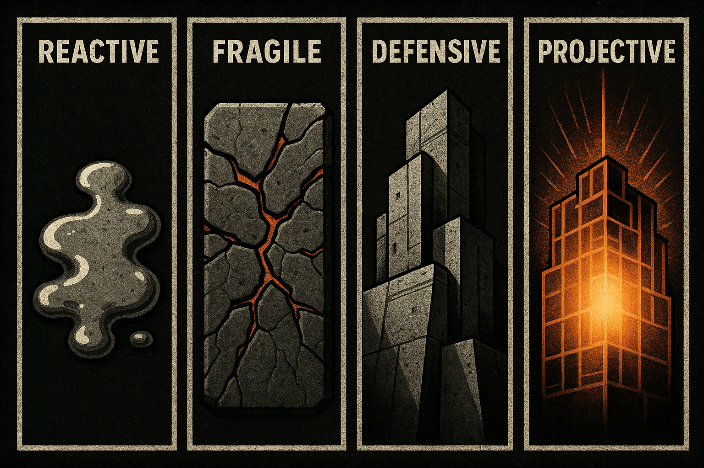

-

THE FRAME CONTROL BLUEPRINT
Mastering Social Presence and Personal Boundaries
A PREMIUM IRONCLAD FOUNDATION COURSE -
MODULE 1
Social Presence Essentials
Core Principles of Confident Interaction
-
THE DYNAMICS OF SOCIAL INFLUENCE
Every interaction involves a subtle negotiation of perspectives. The stronger, more grounded perspective naturally influences the interaction.
Grounding creates natural influence People instinctively evaluate others' confidence and consistency. Your ability to maintain your perspective directly impacts how others respond to you.
-
MINDSET AS YOUR FOUNDATION
Your core beliefs shape your presence more than any technique. Inconsistent self-perception creates openings for doubt.
Example of Limiting Self-Perception:
- Belief: "I'm not interesting enough"
- Behavioral Impact: Hesitant speech, seeking validation, avoiding eye contact
- Outcome: Others mirror this uncertainty, creating distance
We'll rebuild this foundation from the ground up.
-
YOUR SOCIAL PRESENCE SPECTRUM
Identify where you currently operate to target your growth:
 Your evolution path - Reactive: Constantly adjusting to others' expectations
- Fragile: Easily disrupted by challenges
- Defensive: Strong but requiring constant protection
- Projective: Naturally influential and consistent
-
SELF-ASSESSMENT: IDENTIFY YOUR DEFAULT MODE
Which response feels most authentic to you in this situation?
Situation: Someone says, "People who work out constantly seem pretty obsessive." You exercise regularly.
A) "Yeah, some take it too far. I just do it for health."B) "That's judgmental! What's wrong with self-improvement?"C) "I disagree. Discipline matters. We can have different views."D) Smiling: "Interesting perspective. What's your approach to wellness?" -
MODULE 2
Practical Implementation
Tools for Authentic Confidence
-
THE RESPONSE MATRIX
Match your response to the situation's demands:
Situation Level Example Your Response Minor Playful challenge Confident Acknowledgement: A knowing smile Moderate Differing opinion Clear Perspective: "I see it differently" Serious Last-minute cancellation Boundary Setting: "Let's reschedule when you can commit" Critical Disrespect Disengage: Calmly end the interaction -
NAVIGATING EMOTIONAL MOMENTS
When someone expresses vulnerability, they're often seeking stability:
- Genuine Concern: "I'm nervous about this"
Response: "I understand. We'll take it at your pace" - Past Baggage: Bringing up previous negative experiences
Response: "That sounds challenging. What are you taking from that now?" - Boundary Testing: Using history to justify poor behavior
Response: "I respect your experience, but I expect [standard] now"
- Genuine Concern: "I'm nervous about this"
-
SETTING THE TONE
Establish positive dynamics from the start:
- Confident Planning: "Let's meet at X place at 8. It has great atmosphere"
- Inclusive Language: "We should try that option"
- Value Positioning: "I have an hour before my next commitment - let's make it count"
-
MODULE 3
Embodying Authentic Presence
From Technique to Natural Expression
-
CRAFTING YOUR CORE IDENTITY
True confidence stems from self-knowledge, not techniques. Define your non-negotiables:
Your personal constitution -
EXERCISE: YOUR PERSONAL CONSTITUTION
Define your core principles (saved automatically):
-
CENTERED AND PRESENT
With clear principles, you develop calm assurance - viewing social challenges as opportunities rather than threats.
Stability amidst chaos This grounded presence allows you to navigate interactions with authentic confidence.
-
BEYOND SOCIAL DYNAMICS
These principles transform all areas of life:
- Career: Confident negotiation comes from knowing your value
- Relationships: Healthy boundaries create mutual respect
- Personal Growth: Clarity of purpose drives meaningful progress
-
COURSE COMPLETE
You now possess the tools to navigate social dynamics with authentic confidence. Remember: true presence comes from consistent practice of these principles.
You've mastered The Frame Control Blueprint